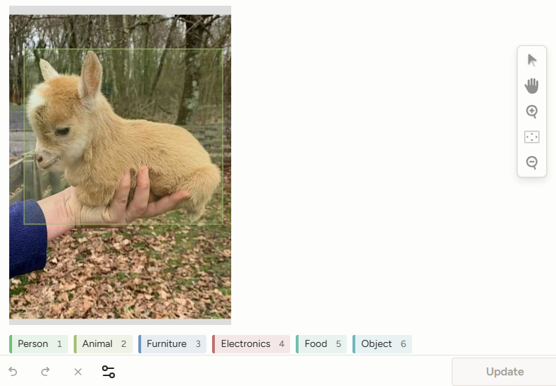
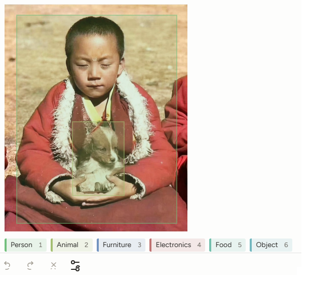
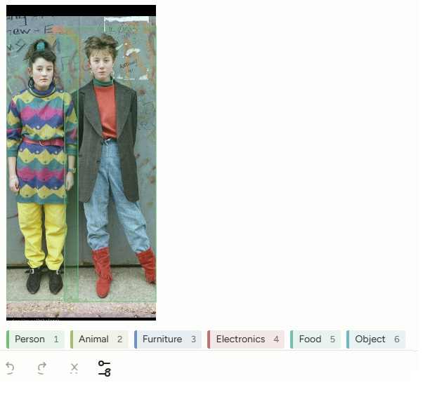
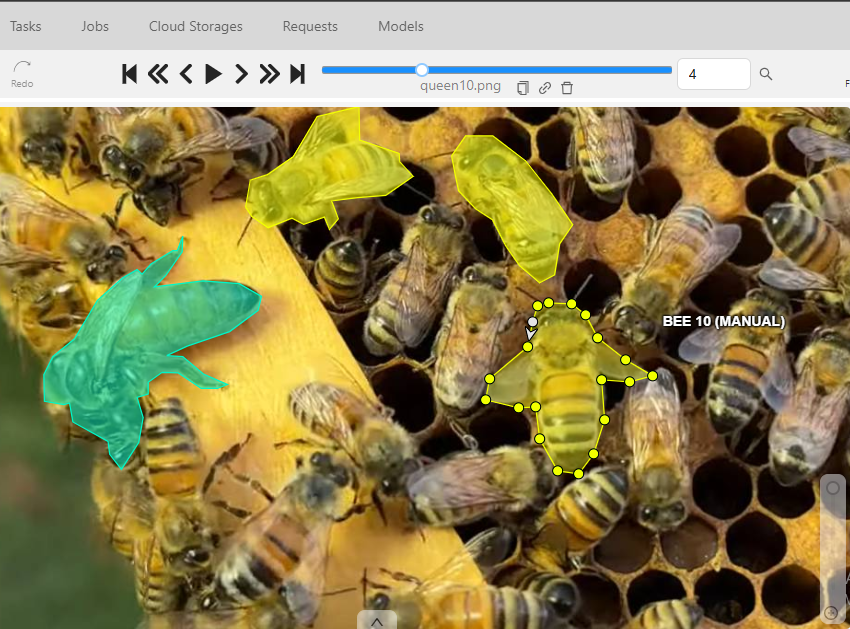
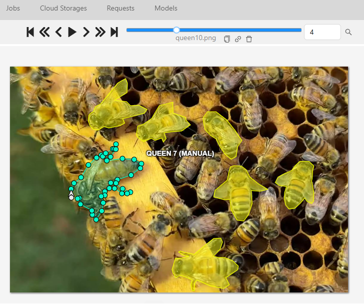
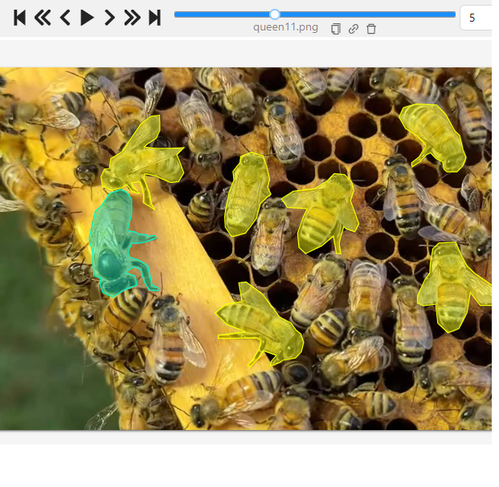
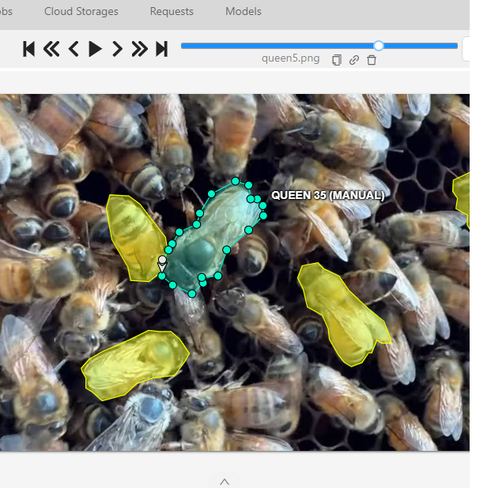

Juan Podazza
Data Annotation Specialist & Computer Vision Enthusiast
About me: I specialize in high-precision data labeling for Machine Learning models. With experience in CVAT and Label Studio, I focus on delivering accurate datasets for Object Detection and Semantic Segmentation. Currently, I am expanding my technical stack with Python to automate data processing and improve model training workflows.
Skills: Bounding Boxes | Polygons | Semantic Segmentation | HTML/CSS | Python (Student)
Object Detection (Bounding Boxes)
High-precision bounding box annotation for object identification.



Semantic Segmentation (Polygons) - Insect Morphology Project
Complex polygon mapping for biological research and entomology. This project involved pixel-perfect delineation of insect anatomy for YOLO-based detection models.



